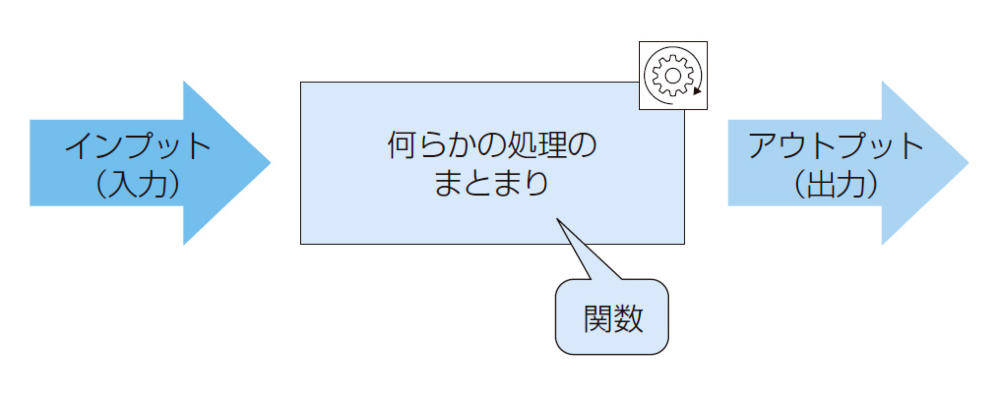

1. 今回やること
- 関数（function）
- タイマー（setInterval、setTimeout）
インプット（入力）を受け取り、何らかの処理を行ってから結果としてアウトプット（出力）を返す、一連の処理のまとまりのこと。関数を使って処理をまとめることによって、同じ処理を何度も書く必要がなくなり、コードの再利用性や保守性を高めることができる。

// 関数の宣言
function testFunc(){
console.log('関数実行！');
}
// 関数の実行
testFunc();プログラム中で関数などを呼び出すときに渡す値のこと。渡された側はその値に従って処理を行う。（インプット（入力））
// 関数の宣言
function testFunc(val1, val2){
console.log(val1 + val2);
}
// 関数の実行
testFunc(10, 20);
// 関数の宣言
function testFunc(val1 = 10, val2 = 20){
console.log(val1 + val2);
}
// 関数の実行
testFunc();
testFunc(20);
関数などが処理を行った結果として、呼び出し元に渡される値のこと。（アウトプット（出力））
// 関数の宣言
function testFunc(val1, val2){
return val1 + val2;
}
// 関数の実行
let num = testFunc(10, 20);
console.log(num);
let doller = changeDoller(100);
console.log(`${doller}ドル`);
function changeDoller(yen) {
}let text = setText("takagi");
console.log(text);
function setText() {
}関数の定義は、代入演算子を使って変数に対して関数式を代入することでも行うことができる。
// 関数式の定義
const testFunc = function(val1, val2){
return val1 + val2;
}
// 関数の実行
let num = testFunc(10, 20);
console.log(num);// 関数宣言は、後から宣言された関数が上書きされて実行される。
function sengen(){
console.log('最初に定義した。');
}
function sengen(){
console.log('後に定義した。');
}
sengen();
// 関数式は、エラーとなる。
const siki = function(){
console.log('最初に定義した。');
}
const siki = function(){
console.log('後に定義した。');
}
siki();// 関数宣言は、宣言文よりも前に実行文を記述できる。
sengen();
function sengen(){
console.log('最初に定義した。');
}
// 関数式は、エラーとなる。
siki();
const siki = function(){
console.log('最初に定義した。');
}※エラーが出る方が安全のため、授業ではできる限り「関数式」の形で記述していく。
const getNum = function(num) {
if (num < 10) {
num = '0' + num;
}
return num;
}
let val = getNum(8);
console.log(val);アロー関数とは、新しく追加された関数の省略記法。授業では今後アロー関数で記述する。
// アロー関数の定義
const testFunc = () => {
console.log("アロー関数");
}
// 引数が1つの場合は括弧を省略できる ※授業では省略しない
const testFunc = text => {
console.log(text);
}
// 引数が2つ以上の場合は括弧を省略できない
const testFunc = (val1, val2) => {
return val1 + val2;
}let value = [5, 10, 15, 20, 25];let value = [5, 10, 15, 20, 25];
const calcAverage = (list) => {
let num = 0;
for (let i = 0; i < list.length; i++) {
num += list[i];
}
num /= list.length
return num;
};
let average = calcAverage(value);
console.log(`平均値：${average}`);マウスイベント等が発生した際に実行される処理も「関数」の形になっているため、関数名をつけて分けて書くことができる。
//今までの書き方
window.addEventListener("click", function(){
console.log("click!");
});
//関数式にした形
const clickEvent = () => {
console.log("click!");
};
window.addEventListener("click", clickEvent); // 括弧をつけるとイベント発生前に実行されることに注意！const clickEvent = (val) => {
console.log(val);
};
window.addEventListener("click", () => {
clickEvent("window");
});イベントが発生した際、引数にディフォルトで渡される値を「イベントオブジェクト」と呼び、イベントに関する様々な情報が格納されている。
const clickEvent = (e) => {
console.log(e);
console.log(e.target);
};
window.addEventListener("click", clickEvent);※他のイベントのイベントオブジェクトもチェックしてみる。
const clickEvent = (e, val) => {
console.log(e);
console.log(val);
};
window.addEventListener("click", (e) => {
clickEvent(e, "window");
});3つの値が入った配列を用意し、数字のボタンをクリックした時はそれに対応した文字列を、ランダムのボタンを押した時にはランダムな文字列を表示する。
<body>
<button class="number">1</button>
<button class="number">2</button>
<button class="number">3</button>
<button class="random">ランダム</button>
<p class="result"></p>
<script>
//用意した配列
const words = ["1.apple", "2.banana", "3.orange"];
//結果を表示するp要素を取得
const result = document.querySelector(".result");
//使用する関数式
const getWord = (num) => {
result.innerHTML = words[num];
};
//ページを表示した時にランダムに値をp要素に表示する
let random = Math.floor(Math.random() * words.length); //randomという名前の変数を宣言して、配列の数分のランダムな数字を代入する
getWord(random); //変数に入っているランダムな数字を関数に渡しながら実行する
//ランダムボタンをクリックしたら、配列の中から値をランダムに表示する
const randomBtn = document.querySelector(".random");
randomBtn.addEventListener("click", () => {
random = Math.floor(Math.random() * words.length);
getWord(random);
});
const numberBtn = document.querySelectorAll(".number");
for (let i = 0; i < numberBtn.length; i++) {
numberBtn[i].addEventListener("click", (e) => {
const num = e.target.innerHTML - 1;
getWord(num);
});
}
</script>
</body>一定時間ごとに処理を行うには「タイマー」を使用する。
let count = 0;
const countUp = () => {
console.log(count++);
};let count = 0;
const countUp = () => {
console.log(count++);
};
setInterval(countUp, 1000); //括弧がいらないことに注意！let count = 0;
let timer; //変数を宣言しておく
const countUp = () => {
console.log(count++);
if(count > 5){
clearInterval(timer);
};
};
timer = setInterval(countUp, 1000); //変数に代入let count = 0;
const countUp = function(){
console.log(count++);
};let count = 0;
const countUp = () => {
console.log(count++);
};
setTimeout(countUp, 1000);let count = 0;
const countUp = () => {
console.log(count++);
setTimeout(countUp, 1000);
};
setTimeout(countUp, 1000);let count = 0;
let timer;
const countUp = () => {
console.log(count++);
timer = setTimeout(countUp, 1000);
if(count > 5){
clearTimeout(timer);
};
};
timer = setTimeout(countUp, 1000);let count = 0;
let timer;
const countUp = () => {
console.log(count++);
timer = setTimeout(countUp, 1000);
if(count > 5){
clearTimeout(timer);
};
};
countUp();※「スタート」ボタンを連打されても正常に動作するように。
const url = 'https://trident.takagino.net/doc2024/javascript/assets/04/omikuji/';
const files = ['daikichi.png', 'chuukichi.png', 'syoukichi.png', 'kyou.png', 'daikyou.png'];<!DOCTYPE html>
<html lang="ja">
<head>
<meta charset="UTF-8" />
<meta name="viewport" content="width=device-width, initial-scale=1.0" />
<title>ストップゲーム</title>
</head>
<body>
<button class="start">START</button>
<button class="stop">STOP</button>
<p class="result">0</p>
<p class="comment">おしい！</p>
<script>
const startBtn = document.querySelector(".start");
const stopBtn = document.querySelector(".stop");
const resultText = document.querySelector(".result");
const commentText = document.querySelector(".comment");
let timer;
let count = 0;
commentText.innerHTML = "100を目指そう";
const countUp = () => {
console.log(count++);
resultText.innerHTML = count;
};
startBtn.addEventListener("click", () => {
count = 0;
commentText.innerHTML = "";
clearInterval(timer);
timer = setInterval(countUp, 50);
});
stopBtn.addEventListener("click", () => {
clearInterval(timer);
if (98 <= count && count <= 102) {
commentText.innerHTML = "おしい！";
}
if (count == 100) {
commentText.innerHTML = "すごい！";
}
});
</script>
</body>
</html>